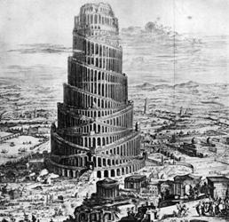
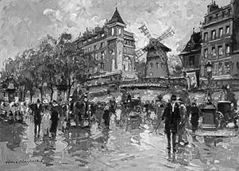
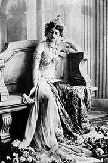
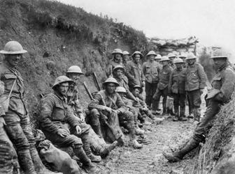
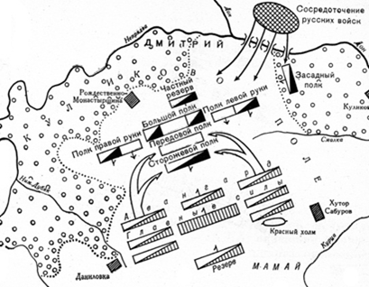
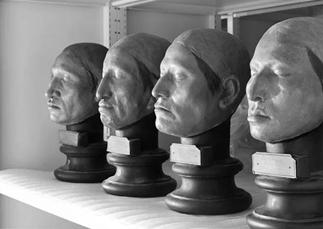
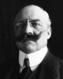

Владимир Макаров
FEMME FATALE
Москва
Март 2020
ПРЕДИСЛОВИЕ
Древний Нью-Йорк располагался по обоим берегам реки Гудзон. По преданиям, был основан выходцами из Европы в начале XVII века. Это был важный политический, экономический и культурный центр Древнего мира. В Голландских источниках известен как Новый Амстердам. Позднее вошел в состав государства под названием Соединенные Штаты Америки. На 5236-ой сессии Комитета Всемирного Наследия город Нью-Йорк, как и соседний Вашингтон, были включены в список городов всемирного наследия.
Руины Нью-Йорка и Вашингтона представляют собой группу холмов. Исторические раскопки впервые были выполнены профессором археологии доктором Ли Джорджем Авелиани около 30 лет назад. Однако, из-за сильных разрушений, скудости найденных артефактов и противоречивости письменных свидетельств той эпохи, точно установить, где какой из двух городов располагался, так и не представилось возможным.
Многие историки справедливо сравнивают Нью-Йорк и Вашингтон эпохи Соединенных Штатов с еще более древними Вавилоном и Ниневией в Месопотамии эпохи Бронзового века. В этом плане особый интерес представляют недавние исследования, выполненные профессорами математики Готлибом Ноузом и Анатолем Фомазетом и получившие название "Новое летописание".
Приведем только несколько самых ярких примеров из их многогранного научного труда, посвященного данной теме:
| 1. Навуходоносор {1}, царствовавший в Ниневии (по другим источникам в Вавилоне), пошел войной на мидийского царя Арфаксада. И попросил Навуходоносор правителей соседних стран помочь ему в этой борьбе. Но те презрели слово Ассирийского царя и не собрались вместе с ним на войну, потому что они не боялись его, и он был для них как один из равных.
|
| 1. Дональд Обама {2}, руководивший Соединенными Штатами из Вашингтона (по другим источникам из Нью-Йорка) враждовал с Аятоллой Персии (Ирана) Хаменеи и попросил другие страны помочь ему в этой борьбе. Но те презрели слова Американского правителя и не стали помогать ему, потому что не боялись его, и он был для них как один из равных.
|
| 2. И тогда Навуходоносор решил отомстить непокорным странам, напал на Иудею, осадил город Ветилую, и перекрыл трубопровод, питавший город водой.
|
| 2. И тогда Дональд Обама решил отомстить непокорным странам, объявил им торговую войну и санкции, и перекрыл трубопровод, питавший их газом.
|
| 3. Народ Иудеи и Израиля побеждал во всех войнах, если соблюдал завет предков, и всегда нес в сердце своем особую миссию по совершенствованию мира.
|
| 3. Российский народ побеждал во всех войнах, если следовал духу самосознания своих предков, и всегда нес в сердце своем особую миссию по совершенствованию мира.
|
| 4. Периодически соперничающие стороны отправляли в стан неприятеля секретных агентов-лазутчиц (роковых женщин), которые, пользуясь своими женскими чарами, обольщали врагов и добивались успехов.
В VI веке до нашей эры такой роковой женщиной была Юдифь {3}.
|
| 4. Периодически соперничающие стороны отправляли в стан неприятеля секретных агентов-лазутчиц (роковых женщин), которые, пользуясь своими женскими чарами, обольщали врагов и добивались успехов.
В XX веке нашей эры такой роковой женщиной была Мата Хари {4}.
|
Приведенные выше, а также и другие многочисленные совпадения истории, позволили авторам сделать справедливый вывод о том, что, скорее всего, в обоих случаях мы имеем дело с одними и теми же историческими эпизодами. Позднее, при составлении исторической хронологии, историки сознательно или случайным образом помещали эти события в разные исторические эпохи, отстоявшие друг от друга на более чем 2 500 лет.
К счастью, совсем недавно при очередных раскопках на Восточно-Европейской равнине, учеными-археологами была обнаружена древняя флэшка, расшифровка которой позволила пролить новый свет на все указанные события. Флэшка пролежала в земле свыше 1 500 лет. Хорошая сохранность ее объясняется тем фактом, что она все это время находилась в слое плотной белой глины, препятствующей доступу к ней кислорода.
После проведенного спектрального анализа ученым удалось разгадать двоичный код, которым в этом удивительном артефакте была записана информация, а затем перевести имевшийся там древнерусский текст на современный Englichina.
Некоторые малопонятные слова и выражения были расшифрованы стараниями наших ученых-лингвистов во время их полевых экспедиций по еще сохранившимся в нагорных районах Европы обособленным этнографическим поселениям индоевропейских групп населения.
Ниже вниманию читателей представлен этот уникальный документ под названием "Femme fatale". Текст, скорее всего, был написан на основе более ранних письменных источников и устных преданий первой половины XXI века автором, имя которого, к сожалению, неизвестно.
Тем не менее, данное произведение, бесспорно, с литературной точки зрения является одним из лучших образцов художественной литературы той эпохи и содержит массу бытописных, лингвистических и этнографических подробностей, до того малоизвестных современной исторической науке.
Главный редактор,
Старший научный сотрудник Отдела древних рукописей Комитета Всемирного Наследия Земшарной республики
Куанг Эммануэль Астуриус
27.03.3520 г.
| 
|
| Башни Вавилона и Нью-Йорка
|
ПОЭМА "FEMME FATALE"
I
Мы все хотим историй острых,
Про секс, любовь и феминизм,
Но жен всегда находим добрых,
Лишь в битвах ищем драматизм.
Среди мужчин полно героев,
Царей, поэтов, мудрецов,
От гениальных сумасбродов,
До просто полных дураков.
Виновна жажда денег, власти,
Что слепит им глаза в веках?
А может быть сиянье страсти,
Что пламенеет в их сердцах?
А женщины, что нам в усладу,
Творцом на радость рождены,
В своей судьбе найдут награду,
Иль к сильному прильнут плечу?
У многих скромниц взор потуплен,
Свою судьбу полжизни ждут.
Но если яд любви пригублен,
С любимым славно проживут.
Другое дело пламя страсти,
То рок судьбы для Femmes fatales,
Чужим решеньям неподвластны,
Им чужды правда и мораль.
Мужчин меняют как перчатки,
Лишь к цели знают верный путь,
Огни любви для них лишь маски,
Готовы всем они рискнуть.
Оружие - их грудь и бедра,
Кудрей на шее завиток,
Разрез, что снизу для обзора,
В глазах, устах - всегда намек.
II
Ночные кабаре, в огнях Париж,
Бульвар Клиши распахивает двери,
Ну что ж ты, милочка, дрожишь?
Садись ко мне скорее на колени.
Все жены, что сбежали от мужей,
В кафешантанах время прожигали,
Моне
{5}, Дега
{6}, мерцанье фонарей,
О жизни без забот они мечтали.
Всю ночь в безумии страстей,
Тела свои усладе предавали,
Не знали назначения главней,
Чем тот канкан, где ноги поднимали.
Но знать хотите вы о Мата Хари,
Живут на Яве молодой четой,
Но нет злосчастнее той пары,
Муж-офицер тому виной.
Рудольф МакЛеод, пьяница и хам,
Не верил Мата Хариным слезам,
Марго не стала долго ждать,
Решила жизнь с нуля начать.
| 
| Антуан Бланшар "Мулен руж" на бульваре Клиши
|
Оставив все, в Париж она,
Недолго думая, умчалась,
Без денег и совсем одна
С минувшей жизнью распрощалась.
Восточный стиль и нагота
В приватных танцах закружились,
Сплетенья шарма и лганья
В волнах удачи растворились.
А там и кавалеров тьма,
Эмиль Гимэ, знаток искусства,
Любовный жар Ксавье-дельца,
К Ван дер Виллену сладостное чувство.
Альфред Киперт, немецкий офицер,
Как пес ходил и был ей верен,
А Мессими
{7} , министр и кавалер,
Был в тратах крайне неумерен.
Отдельною строкой Маслов,
Что в Русском корпусе сражался.
В постели был как царь и бог,
От бурной страсти задыхался.
Увы, не вечен жизни бал,
Война пришла из-за границы,
Вселенский начался скандал,
Всем чудились шпионов лица.
В мундире даже шут красив,
Но воины вдвойне прекрасны,
А если статен, не плешив,
То женщины на все согласны.
Чужие и свои в политике важны,
В любви у Греты все равны:
"Снимай мундир, ложись в постель,
Секрет-другой сказать успей!"
Французская разведка не дремала,
Досье на Мату Хари собирала:
"Агент, она! Двойной шпион!"
Арест и суд - таков закон.
| 
| Мата Хари в 1906 году
|
III
Ах, годы Греты молодые,
Смугла, красива, хороша,
В мечтах объятия мужские,
Гадалку встретила она.
Вот быстро карты разложили,
Таро ведь никогда не лжет,
Ей жезлы бедами грозили,
Но может в кубках повезет.
Аркан не часто выпадает,
Ведунья на него гадает:
"Путь Каббалы тебе открыт,
Об этом Шива говорит!"
"Восток удачу принесет,
Но будет короток твой срок,
Из прошлого услышишь зов,
Увидишь много странных снов!"
К словам гадалки не готова,
Любовных тем она ждала,
И просит карты бросить снова,
Муж нужен ей, не Каббала.
Гадалка карты собирает:
"В Таро два раза не играют".
У Греты слезы на глазах,
Слова запомнила о снах.
IV
Года как утренний туман,
У Маты Хари пролетели,
Забыт тот карточный дурман,
Париж открыл свои ей двери.
Коко Шанель
{8} духи мешала,
За деньги Грета танцевала,
Одно лишь знала мастерство,
Восточных танцев торжество.
Умаялся за ночь Монмартр,
Кафешантаны опустели,
Никто не вытащил свой фарт,
Одна, как перст, лежит в постели.
Но что за чудо из чудес?
Огонь камина ярче, ближе,
И тени, что сошли с небес,
Уносят Грету из Парижа.
V.
Мгновенье занял тот полет,
Вокруг все сразу поменялось,
Веков пронесся хоровод,
И на Востоке Мата оказалась.
Живет сейчас в Израиле она,
Скромна, богата и вдова,
Был муж ее благочестив,
А имя ей теперь Юдифь.
Но слух пронесся над страной,
Ассирия пошла войной,
Ливан с Дамаском пали ниц,
Враги стоят уж у границ.
В поход на Мидию идти
Пред тем Евреи отказались,
Не в первый раз их извести,
Враги Израиля пытались.
Навуходоносор был царем,
Ниневией и Вавилоном правил,
Чужая кровь тирану нипочем,
Он Олоферна в бой отправил.
Сефарды вы иль Ашкенази,
Пред Яхве-Богом все равны,
В глазах Еврея нет печали,
Когда у стен стоят враги.
Так говорили Иудеи,
И самый главный их Раввин,
Готовы к бою все Евреи,
И их священник Иоаким
{9}.
VI
Войны приятные мгновенья
Щекочут нервы лишь в тылу,
В окопах мало вдохновенья,
Снарядов свист и вши в боку.
Амьен
{10} и Сомма
{11} под ударом,
Верден
{12} под пушками трещит,
Пуанкаре
{13} хоть и не старый,
Порой на Клемансо
{14} ворчит.
Вот две дивизии разбиты,
Бегут французы от врага,
Народ винит во всем семитов,
Хоть это, право, ерунда.
| 
| В окопах Первой мировой
|
Еще не наступило время,
Все беды вешать на евреев,
Виновных нужно отыскать,
За бегство с фронта наказать.
Нашли! Шпионы виноваты,
В Париж проникли, супостаты!
Когда же начало светать,
Решили Грету задержать.
Сапог раздался стук за дверью,
В глазах у офицера блеск,
Сон про Юдифь внезапно прерван:
"Мадам, вот ордер на арест".
"Позвольте мне хотя б одеться!",
"Приказ! С вас не спущу я глаз,
В полиции вы хитростью известны,
В окно удрать вы можете от нас!"
"Я часто в жизни раздевалась,
По сцене я ходила босиком",
Так говорила Грета, одеваясь:
"Пред Богом не виновна я ни в чем!"
В Венсене
{15} есть дворец старинный,
Стеною толстой окружен,
Туда отвозят всех повинных,
Кто в шпионаже уличен.
VII
Пред битвой нужно совещаться,
О том стратеги нам твердят,
В Мытищах чаем наслаждаться,
Картофель по столу катать
{16}.
И если ты большой начальник,
В атаке будь ты впереди,
Но вот закончен бой финальный,
В тылу порядок наводи.
Уж месяц Ассирии войско
У Ветилуйских стен стоит,
И чтоб понять страны устройство,
Начальник всех собрать велит.
Вожди кряхтят, затылки чешут,
Гудит их пестрая толпа,
Не просто им разгрызть орешек,
В чем Иудея так сильна.
Вот Ахиор вперед выходит,
И Олоферну слово молвит:
"Один лишь в мире есть народ,
Кого избрал на небе Бог".
"Покуда чтят завет Евреи,
Им Яхве дарит лишь победы,
Но стоит им сойти с пути,
Не миновать тогда беды".
Увы, не понял Ахиор,
Что Олоферн не любит вздор,
Слова со смыслом не нужны,
Коль подчиненный, то молчи.
Для пущего его позора,
Рабы связали Ахиора,
Его к Евреям отвели,
Оставив город без воды.
Герой событий не таил,
Евреям правду доложил.
Народ в молитвах к Богу пал,
Смирил гордыню, и воззвал:
"Небесный Бог, помилуй нас,
Прими поклон от Иудеев,
В войне Завет нам силы даст,
Погубим скоро всех злодеев!".
| 
| Пример стратегии. Куликовская битва {17}.
На плане сторожевой и засадный полки по замыслу Дмитрия Донского
|
VIII
Ллойд-Джордж
{18} не тратил время даром,
С Нивелем
{19} план он начертал,
Но обернулось все кошмаром,
Фронт, где стоял, там и застрял.
В Венсене кормят всех баландой,
Один для всей тюрьмы закон,
"Марш на допрос" - слышна команда,
А Грете снова снится сон.
Еврейки новость обсуждают,
Уж больно Ахиор хорош,
Любви канон ветильцы знают,
А он целует их взасос!
Упруги мышцы, нос горбинкой,
Походка как стрела пряма,
Готовы все в него влюбиться,
Девица ты, иль замужем жена.
Юдифь корзинку собирает,
Вот на базар спешит она,
Идет и бедрами качает,
Хоть и вдова, а хороша!
Случайный взгляд, ресниц томленье,
Навстречу Ахиор идет,
Невольных рук прикосновенье,
И начался любви полет.
И день, и ночь они воркуют,
Любовным пламенем горят,
А жители меж тем горюют,
Воды ведь нет, а пить хотят.
Но для того и есть стратеги,
Чтоб планы битвы создавать,
А Ахиор для юной леди,
Готов и жизнь свою отдать.
"Давай оденусь я служанкой,
И в стан врагов проникнем мы,
Для них ты будешь как приманка,
Ох, натворим с тобой беды!"
IX
"Нам все про вас, Мадам, известно",
Так дознаватель говорил,
"В Мадриде вы встречались с немцем,
Он сговор с вами подтвердил".
"Флакончик с цианидом ртути
{20},
У вас в квартире мы нашли,
И дело ваше мы раскрутим,
Хоть не признали вы вины".
"Я сильных мира многих знала,
Но то любви была игра,
Французов я не предавала,
Спросите тех, с кем я спала".
"Увы, но нам они сказали,
Что на суде не вспомнят вас.
Их жены письма нам прислали:
Мужья отвергли с вами связь".
"Ну а Вадим
{21}, его спросите,
Он для меня как свет в окне".
"Нам жаль, сударыня, простите,
Маслофф не будет на суде".
"Ах, кто поможет в дни несчастий?
Кругом предатели одни,
Но верный есть любитель страсти,
О, метр Клюне, на суд приди!"
Клюне законы
{22} твердо знал,
Как мог, свою Марго спасал,
Судили Грету лишь два дня,
"Шпионке смерть" - вердикт суда.
X
Но в Ветилуе как дела?
Евреи без воды страдают,
Без влаги жизнь их тяжела,
Град Олоферну сдать желают.
Пять дней еще готовы ждать,
Уверены, что Бог их предал,
"Ах, нет, довольно вам рыдать,
Поверьте, близится победа!"
Так молвила Юдифь вождям,
Надела лучшие наряды:
"Я город свой врагам не сдам,
Недолго ждать конца осады".
Вот к Олоферну в стан идет,
Служанка молодая следом,
Никто и вправду не поймет,
То Ахиор, объятый гневом.
XI
День дарит нам успокоенье,
От солнца на душе легко,
Когда же утра пробужденье,
Томленьем сердце сведено.
Все зыбко в сумраке туманном,
Судьбы канва нам не ясна,
Ведет ли рок опять к страданьям,
Иль просто к продолженью сна.
В Венсене ночи страшно длинны,
А дни ночей еще длинней,
Когда пред Богом ты невинна,
Нет жизни ничего ценней.
Так утро Грета коротала,
В тюремной камере одна,
Когда за ней придут, не знала,
Удачи больше не ждала.
Но постепенно сон коснулся
Ее уставшего чела,
Вот Ахиор ей улыбнулся,
У Олофернова шатра.
XII
К себе враги их приглашали,
Дивились девы красоте,
Вином и пищей угощали,
Лжи не заметив в слепоте.
"Скажи нам, почему бежала?"
Вождь Ассирийский вопрошал,
"Пришла ко мне ты без обмана,
Иль вынудил тебя скандал?".
"Вода и пища истощились,
Заветов в городе не чтут,
В грехи Евреи погрузились,
Свиней едят и вина пьют".
"Будь славен Навуходоносор,
Царь всей земли, держав творец,
Он для Евреев не агрессор,
А света нового венец!"
Слова понравились такие,
И Олоферн у ног ее,
Подарки дарит дорогие,
На пир ведет в свое жилье.
На Ассирийцев ночь спустилась,
У Олоферна пир горой,
Давно уж стража притомилась,
Пора уйти всем на покой.
Кругом гора пустых кувшинов,
И Олоферн, напившись, спит,
Друзьями, слугами покинут,
Лишь ветер за окном шумит.
XIII
Туман растаял над Венсеном,
Луч солнца в камеру проник,
Через решетку видно небо,
В дверях отряд солдат стоит.
"Ах, что такое, право, странно,
Вы мне не завтрак принесли?
Без чашки кофе, круассана,
Хотите на расстрел вести?"
"Мадам, пардон, мы на работе,
Приказ полковником нам дан,
Двенадцать душ на эшафоте,
Казнить велит тюремный план".
"Позвольте губы я накрашу,
Перчатки, ридикюль возьму,
Испить готова сию чашу,
Уже иду, шучу, шучу..."
Отряд зуавов наготове,
Напротив Грета, как струна:
"Ну, что, ребята, вы готовы?"
Приказ стрелять им отдала.
Вот офицер взмахнул несмело,
Но выстрел раньше прозвучал,
Убито лишь земное тело,
Для славы создан пьедестал.
XIV
Юдифь несмело меч тяжелый,
В руках с трудом держать могла,
"Убить врага - труд невеселый,
Месть завершу я за тебя".
Слова и дело вместе слились,
Мечом наш Ахиор взмахнул,
Глава от тела отделилась,
Ее в корзинку запихнул.
Влюбленные домой примчались,
От Олоферна, что осталось,
На стену города кладут,
Евреев всех к себе зовут:
"Хвалите Господа и чтите,
Молитвы небу возносите,
Враги остались без главы,
Господь, Евреев всех храни!"
Вождя увидев бездыханным,
Ассирия бежала прочь,
Словам, поверив первозданным,
Ахир обрезал свою плоть.
XV
Историй странных повторенья,
Увы, случаются порой,
Судьбы то странное везенье,
Иль фарса отзвук роковой?
Но нет покоя телу Греты,
Земле не предана она,
Не приняты в расчет запреты,
Глава ее отделена.
В спирту на полочке хранится,
В Париж в музей отвезена,
Чтоб этим чудом насладиться.
Зеваки ходят допоздна.
Другое дело, Мата Хари,
И, если б не расстрел тогда,
Кто вспомнил бы шпионки славу,
В Париже танцы до утра?
Любовных пут переплетенье,
Имен запутанный кроссворд,
Любви бесстрашное уменье,
Стриптиза сладостный восторг.
Мужчины рождены на свете,
Чтоб тайну женщины познать,
Порок всегда был под запретом,
Но тянет к Femmes fatales опять.
| 
| Страшноватые и диковатые экспонаты Музея анатомии в Париже
|
Примечания
Примечания в книге сделаны Главным редактором рукописи К. Э. Астуриусом
{1} Навуходоносор, по другим источникам настоящее имя Набу Кудурри Уцур, царь Вавилонского царства с 605 года до н. э. по 562 год до н. э.
{2} Дональд Обама, по другим источникам настоящее имя Барак Хуссейн Трамп, Президент Соединенных Штатов Америки с 2009 года н.э. по 2021 год н.э., по другим источникам по 2025 год н.э.
{3} Юдифь, или Иудифь - персонаж ветхозаветной неканонической "Книги Юдифи", еврейская вдова, жившая в городе Ветилуи и спасшая его от нашествия ассирийцев. Исходя из того, что события "Книги" относится к восемнадцатому году царствования Навуходоносора и ко времени первосвященства Иоакима, время действия около 589 года до н. э.
{4} Мата Хари (1876 - 1917) - настоящее имя Маргарета Гертруда Зелле, исполнительница экзотических танцев и куртизанка, подданная Голландии. В начале XX века стала широко известна в Европе как танцовщица "восточного стиля". Во время Первой мировой войны занималась шпионской деятельностью в пользу Германии. Расстреляна по приговору французского суда за шпионаж в военное время.
{5} Моне (Оскар Клод Моне, 1840-1926) - французский живописец, один из основателей импрессионизма.
{6} Дега (Илер Жермен Эдгар де Га или Эдгар Дега, 1834-1917) - французский живописец, один из виднейших и оригинальнейших представителей импрессионистского движения.
{7} Мессими (Адольф Мари Мессими, 1869 -1935) - французский политик, служил в качестве военного министра в 1911-1912 годах, а затем снова был военным министром в течение нескольких месяцев в начале Первой мировой войны.
| 
| Досье: Адольф Мессими, 1914 Год
|
{8} Габриель Бонер (Коко) Шанель (1883-1971) - французский модельер, основавшая модный дом "Chanel" и оказавшая существенное влияние на европейскую моду XX века. Она привнесла в женскую моду приталенный жакет и маленькое чёрное платье, из аксессуаров наиболее известными стали сумка на цепочке и крупная бижутерия. Производимые ее фирмой духи "Chanel No.5" стали парфюмерным бестселлером XX века.
{9} Иоаким - Первосвященник Иудеи, служивший в Первом Иерусалимском храме (храме Соломона) во времена Навуходоносора и Юдифи.
{10} Битва при Амьене в августе 1918 года - широкомасштабное наступление союзных англо-французских войск против германской армии во время Первой мировой войны у французского города Амьен.
{11} Сражение на Сомме - одна из крупнейших битв Первой мировой войны с июля по ноябрь 1916 года на берегах реки Сомма. Было убито и ранено более 1 000 000 человек, что делает ее одной из самых кровопролитных битв в истории человечества.
{12} Битва при Вердене (известная как Верденская мясорубка) - совокупность боевых действий немецких и французских войск во время Первой мировой войны на Западном фронте с февраля по декабрь 1916 года. Одна из крупнейших и одна из самых кровопролитных военных операций в Первой мировой войне.
{13} Пуанкаре (Раймон Николя Ландри Пуанкаре, 1860-1934) - французский государственный деятель, трижды занимавший пост премьер-министра Франции и бывший Президентом Франции во времена Третьей республики в 1913-1920 годах.
{14} Клемансо (Жорж Бенжамен Клемансо, 1841-1929) - французский политический и государственный деятель, премьер-министр Франции с 1917 по 1920 год. Член Французской академии. За жесткий характер и непримиримость к политическим противникам получил прозвище "Волк".
{15} Венсен - город в департаменте Валь-де-Марн в восточном пригороде Парижа
{16}) Возможно, автор имел в виду некоторые известные в его эпоху методы и факты по составлению военных стратегий. К сожалению, современная нам историография подобными данными не располагает.
{17} Куликовская битва (Мамаево или Донское побоище) - крупное сражение, состоявшееся 8 сентября 1380 года между объединенным русским войском во главе с Московским великим князем Дмитрием Донским и войском темника Золотой Орды Мамаем.
По смелой гипотезе профессоров Г. Ноуза и А. Фомазета битва произошла около станции метро "Китай-город" между русско-татарским войском во главе с Дмитрием Тохтамышем и объединенным войском Мамая, состоящим из поляков, крымчан и генуэзцев.
{18} Дэвид Ллойд Джордж, Первый граф Дуйвор, Виконт Гвинед (1863-1945) - британский политический деятель, премьер-министр Великобритании от Либеральной партии в 1916-1922 годах, близкий друг Уинстона Черчилля.
{19} Робер Жорж Нивель (1856-1924) - французский дивизионный генерал, главнокомандующий французской армией в первой половине 1917г.
{20} Цианид ртути, или ртутная соль синильной кислоты - Химическая формула Hg(CN)2. Белое или бесцветное кристаллическое вещество без запаха, растворимое в воде.
По версии следствия использовалось для тайной переписки проявляющимися чернилами с немцами. Мата Хари на суде утверждала, что принимала Цианид ртути как противозачаточное средство.
{21} Как признавалась сама Мата Хари, Вадим Маслов был единственной и настоящей ее любовью в этой жизни. И поэтому, наверное, самым тяжелым разочарованием было то, что он, страстно любимый ею и вызванный в качестве свидетеля, в суд не явился.
{22} Согласно ст. 411-1 первой главы первого раздела книги четвертой УК Франции, деяния, предусмотренные статьями с 411-2 по 411-11, образуют состав измены, если они совершены гражданином Франции или военнослужащим, состоящим на службе Франции, и состав шпионажа, если они совершены любым иным лицом.
Главная страница сайта
Страницы друзей "Темного леса"
Последнее изменение страницы 6 Oct 2020
ПОДЕЛИТЬСЯ:
{kind=link}
{kind=link}
{kind=link}
{kind=link}
{kind=link}
{kind=link}
{kind=link}
{kind=link}
{kind=link}
{kind=link}
{kind=link}
{kind=link}
{kind=link}